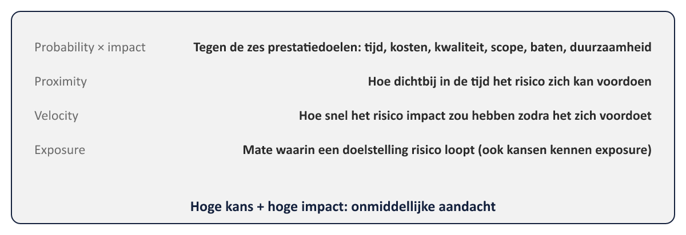
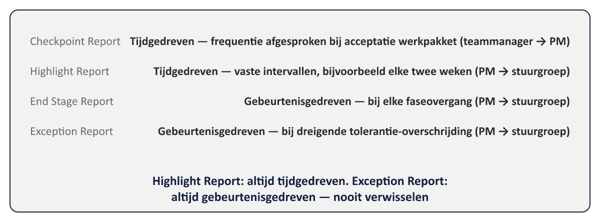

Sheet 1Titel
Project- en Programmamanagement
Niveau 1 · Deel 6: Risk en Progress
Sheet 2De laatste twee practices
Risk: onzekerheid beheren vóórdat het een issue wordt
Progress: voortgang bewaken, escaleren waar nodig
Samen: principe 5, manage by exception, in de praktijk
Sheet 3Risico: neutraal begrip
Onzekere gebeurtenis die, als die zich voordoet, invloed heeft op de doelstellingen
Bedreigingen én kansen — actief allebei beheren
Sheet 4Vijf stappen
Identify → Assess → Plan → Implement → Communicate
| Stap | Kernactiviteit |
|---|---|
| 1. Identify | Risicocontext bepalen, lessen/logs raadplegen, risico's benoemen als oorzaak → gebeurtenis → effect |
| 2. Assess | Beoordelen op probability, impact, proximity, velocity en exposure |
| 3. Plan | Respons kiezen: bedreigingen (vermijden/verminderen/overdragen/delen/accepteren) of kansen (benutten/vergroten/delen/afwijzen) |
| 4. Implement | Gekozen respons uitvoeren door de risicoactie-eigenaar; uitvoering wordt gevolgd |
| 5. Communicate | Risico-informatie continu delen met stakeholders via de reguliere rapportages |
Sheet 5Identificeren: oorzaak → gebeurtenis → effect
Voorbeeld: onvoldoende bezetting (oorzaak) → training vertraagd (gebeurtenis) → projectvertraging (effect)
Sheet 6Beoordelen
- Probability × impact (tegen 6 prestatiedoelen)
- Proximity — wanneer
- Velocity — hoe snel
- Exposure — mate van blootstelling

Sheet 7Inherent vs. restrisico
Inherent: vóór respons
Restrisico: ná respons
Verschil toont of de respons echt genoeg terugbrengt
Sheet 8Reageren: bedreigingen
Vermijden · Verminderen · Overdragen · Delen · Accepteren
Sheet 9Reageren: kansen
Benutten · Vergroten · Delen · Afwijzen
Sheet 10Eigenaarschap
Risico-eigenaar: beheert het risico
Risicoactie-eigenaar: voert de respons uit
→ precies wat ontbrak bij bevinding 6
Sheet 11Progress: doel
Levensvatbaarheid toetsen, plan vs. werkelijkheid vergelijken, corrigeren
Het mechanisme achter manage by exception
Sheet 12Tijdgedreven vs. gebeurtenisgedreven

- Tijdgedreven: vaste intervallen, ongeacht gebeurtenissen
- Gebeurtenisgedreven: getriggerd door een specifiek moment
Sheet 13Rapportagehiërarchie
Teammanager → PM: Checkpoint Report (tijdgedreven)
PM → stuurgroep: Highlight Report (tijdgedreven), End Stage Report & Exception Report (gebeurtenisgedreven)
Sheet 14De examenval
Highlight Report: altijd tijdgedreven
Exception Report: altijd gebeurtenisgedreven
Nooit verwisselen
Sheet 15Alle zeven bevindingen: de balans
| Bevinding | Principe (deel 2) | Practice |
|---|---|---|
| 1. Geen levende business case | Ensure continued business justification | Business Case (deel 3) |
| 2. Stuurgroep zonder bevoegdheid | Define roles, responsibilities, relationships | Organizing (deel 3) |
| 3. Eén grote fase | Manage by stages | Progress / Plans (deel 4, 6) |
| 4. Activiteitenplanning | Focus on products | Plans (deel 4) + Quality (deel 5) |
| 5. Geen toleranties | Manage by exception | Progress (deel 6) |
| 6. Risicolijst zonder eigenaren | Learn from experience | Risk (deel 6) |
| 7. Geen zicht op baten | Tailor to suit the project | Business Case (deel 3) |
Sheet 16Vooruitblik
Deel 7: de processen — hoe alles chronologisch samenkomt, te beginnen bij Starting up a Project